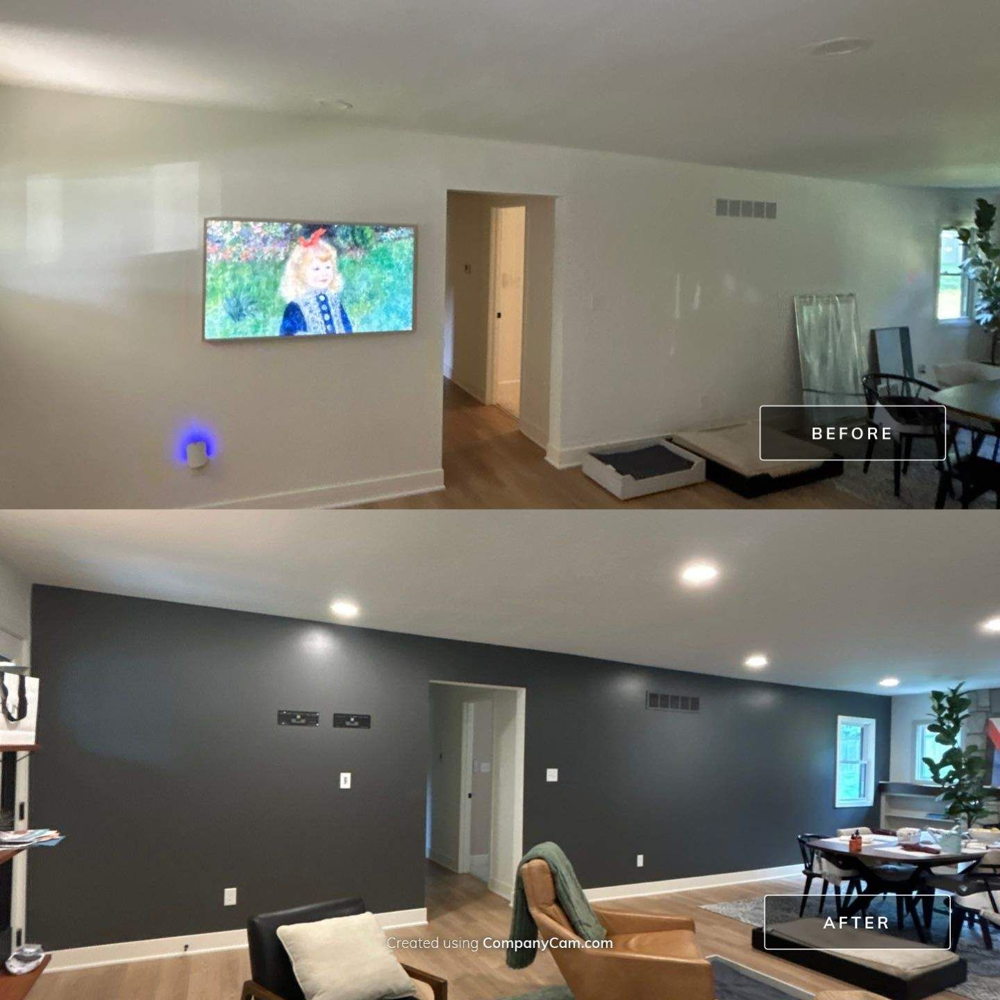
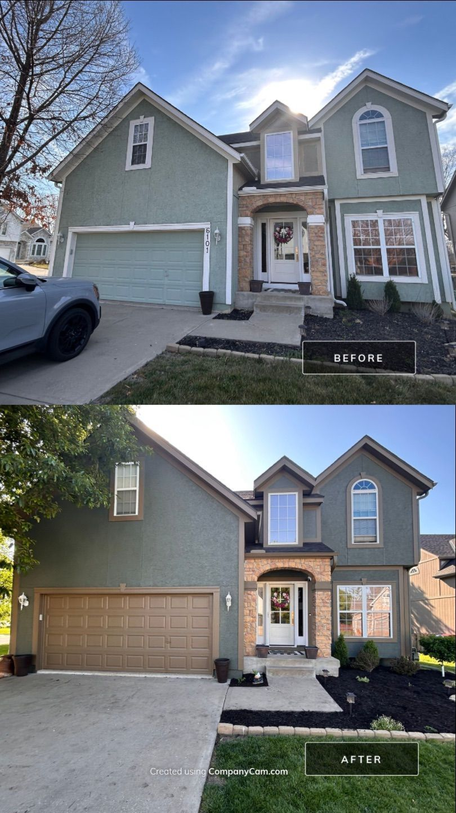
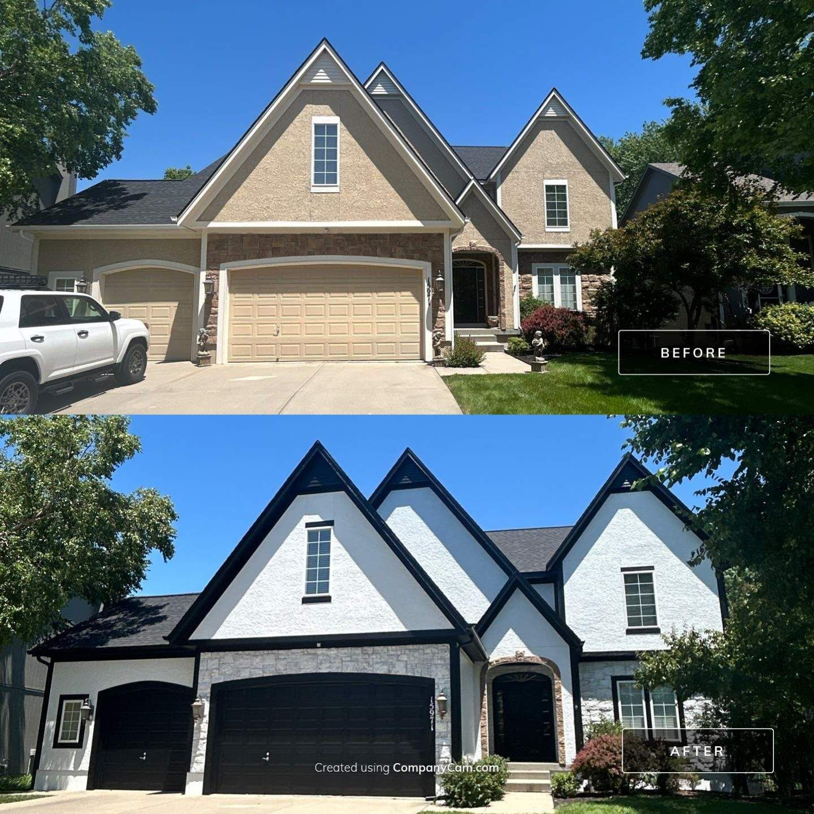
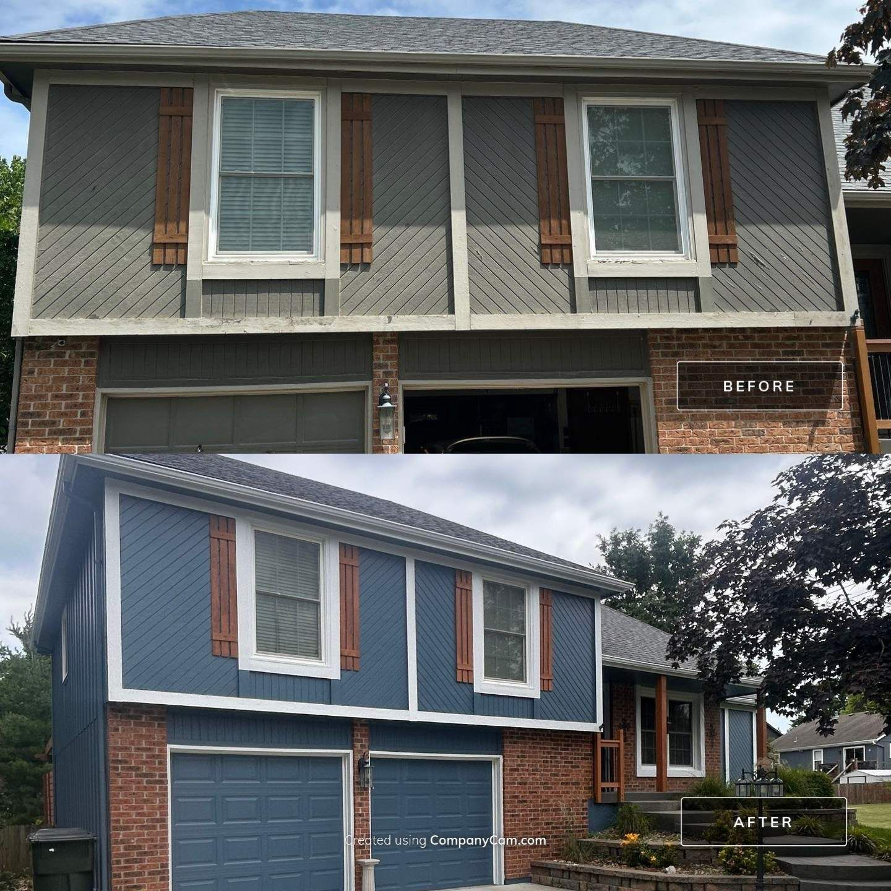
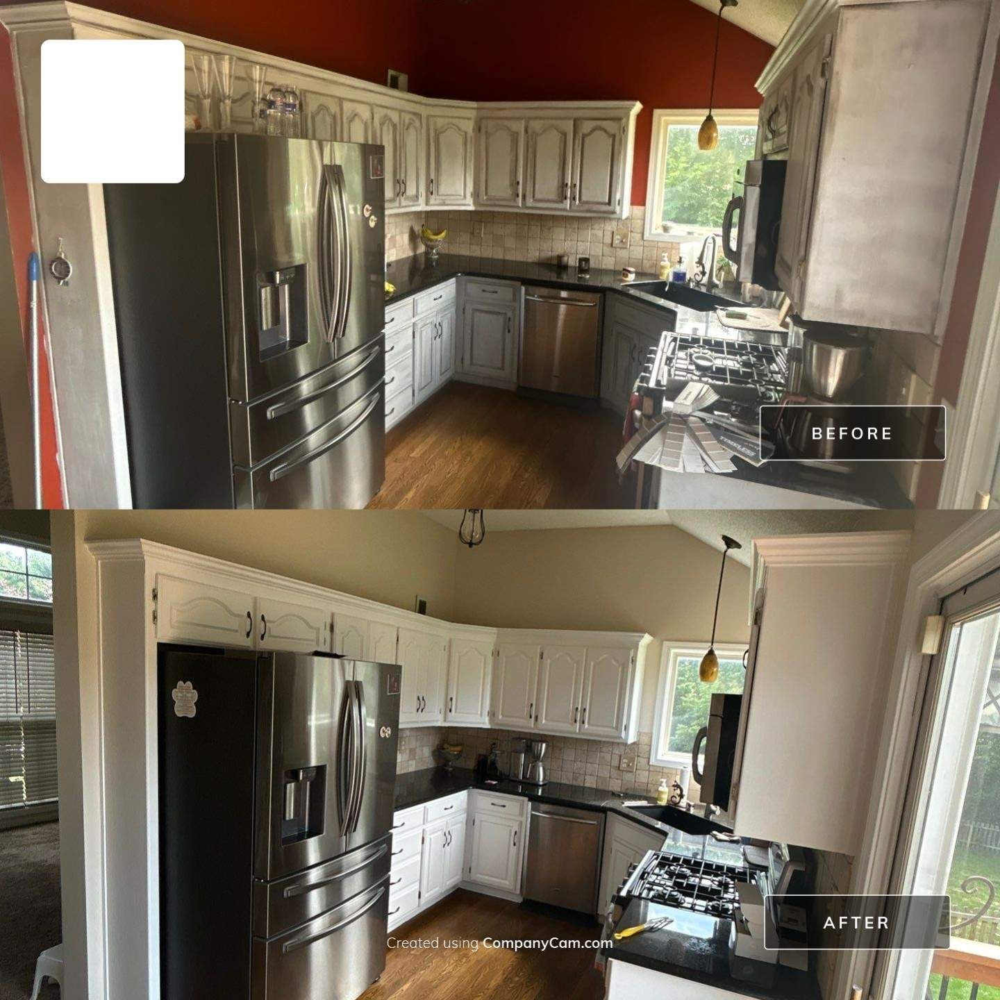
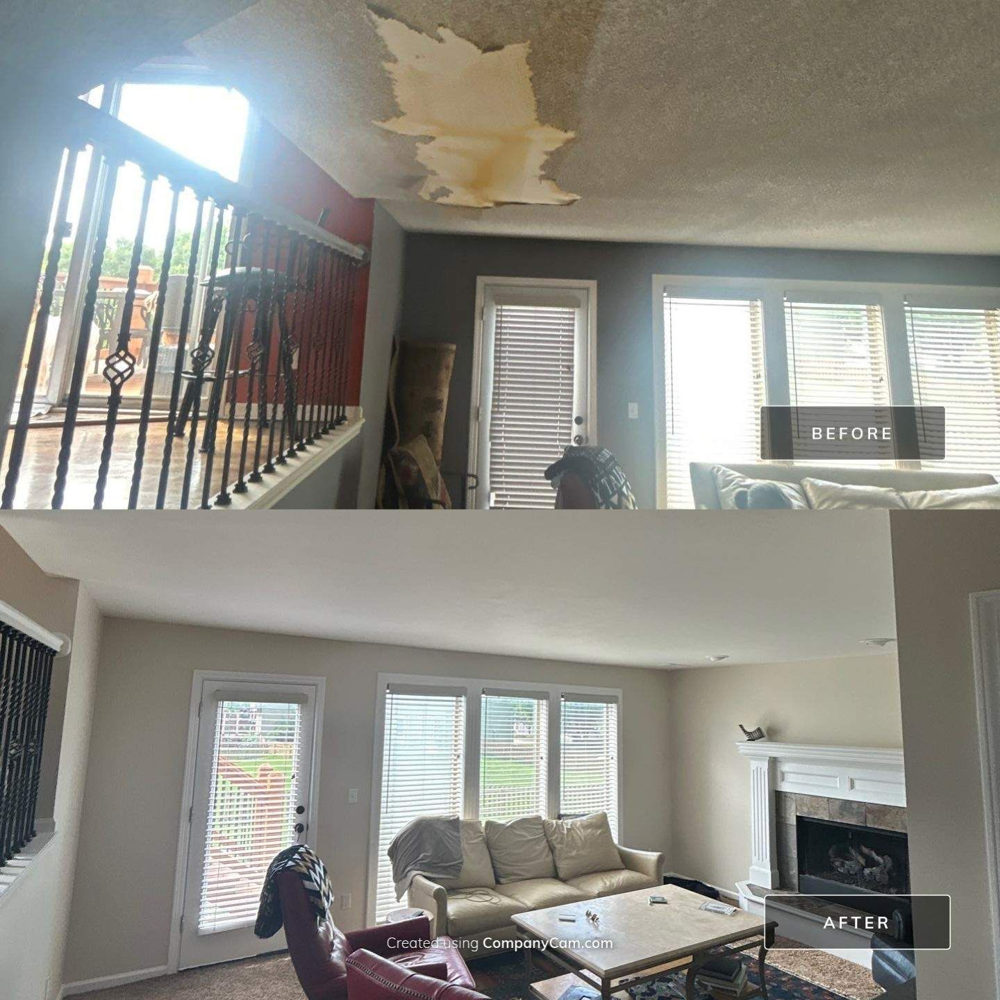
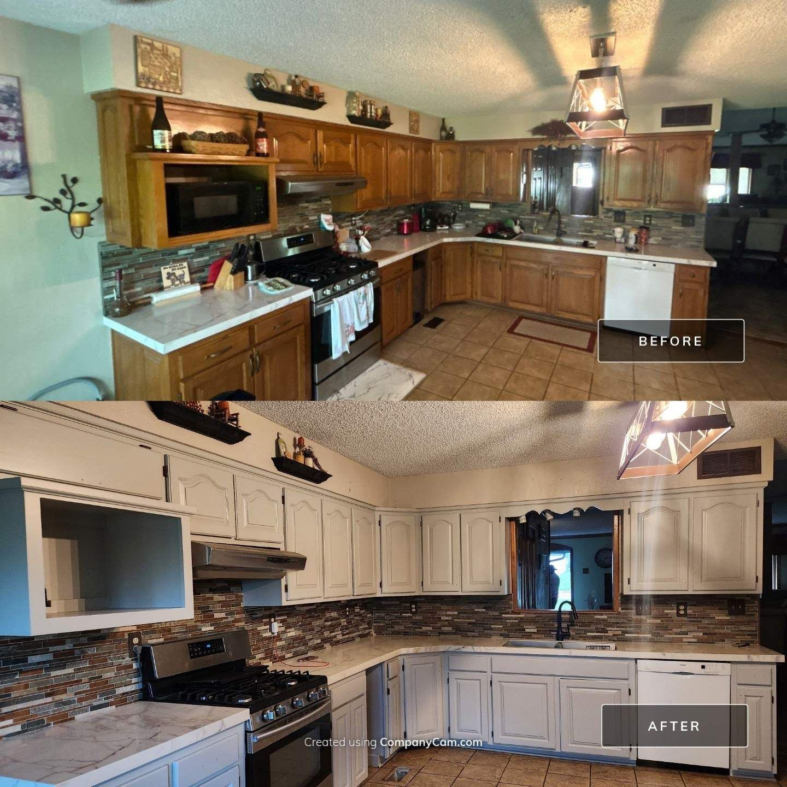

Real Kansas City homes. Real transformations. Every photo on this page is our actual work — no stock, no staging.

Dramatic flip from dark navy to a light, warm greige — same house, completely new feel.

A plain white living room given depth with a rich charcoal accent wall and crisp ceiling lines.

Faded, chalking stucco transformed with a rich green body and warm tan trim and garage.

Tan stucco to Pure White with Iron Ore and Tricorn Black accents, plus a lime wash over the stone — a completely different house.

Faded gray to a rich blue with crisp white trim — full prep, two coats, built to last.

Dated tan with red shutters to a clean light gray with navy accents.

Worn, peeling siding brought back with a deep blue body and bright white trim over the original brick.

Dated cabinets sanded, primed, and sprayed to a clean factory-smooth white.

Stained, damaged ceiling repaired and the whole space repainted fresh.

Classic golden oak cabinets sprayed to a soft white — same kitchen, decades newer.
Want to see a project like yours? Call Ethan — he'll show you before-and-afters from real KC jobs during your estimate.
Free walkthrough with the owner. Detailed written quote. A number that holds.
Request a Free EstimateOr call/text 913-210-1041